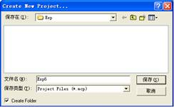
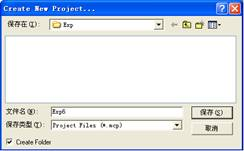
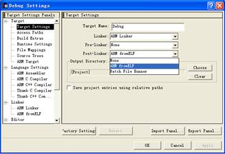
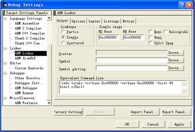
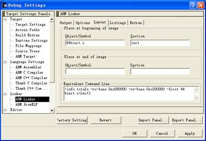
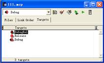
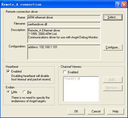

ITEEDU
五、步骤
1．配置ADS集成开发环境
（1）运行ADS 1.2集成开发环境（CodeWarrior for ARM Developer Suite）。选择File｜New命令，在对话框中选择Project选项卡，如图1-17所示，新建一个工程文件。其中示例的工程名为Exp6.mcp。单击Set按钮可为该工程选择路径，如图1-18所示，选中Create Folder复选框后将以图1-17中的Project name或图1-18中的文件名作为创建目录的名称，这样可以将所有与该工程相关的文件放到该工程目录下，便于管理工程。
注意：在图1-17工程模板列表中选择ARM Executable Image通用模板。随后将一步一步地把它配置成针对ARM3000开发板的模板44B0 ARM Executable Image，并把它复制到ADS1.2安装目录下的Stationery目录中（所有的工程模板都在此目录下）。以后新建工程时，在工程模板列表中直接选中44B0 ARM Executable Image模板选项即可，不必每次重新配置模板。
 图1-17 新建工程 图1-18 保存工程
图1-17 新建工程 图1-18 保存工程
（2）在新建的工程中，如图1-19所示，选择Debug版本，使用Edit|Debug Settings命令对Debug版本进行参数设置。
 图1-19 选择版本
图1-19 选择版本
（3）在Debug Settings对话框中选择Target Settings选项，如图1-20所示。在Post-linker列表框中选择ARM fromELF，单击右下角的Apply按钮使其有效。
图1-20 选择Target Settings
（4）在Debug Settings对话框中选择ARM Linker选项，如图1-21所示。在Output选项卡的Linktype选项组中有3种类型的连接方式，常用的是Simple和Scattered两种。Simple是一种简单设置，如果程序需要用到标准C库函数，则选中Scattered单选按钮进行连接地址的设置。若用不到标准C库函数，则选中Simple单选按钮，并按照下面的第（5）、（8）、（9）步进行设置。若用到标准C库函数，则选中Scattered单选按钮，并按照下面的第（6）、（7）、（9）步进行设置。
（5）选中Simple单选按钮，如图1-21所示。在Simple image选项组中设置连接的ReadOnly（只读）和Read-Write（读写）地址。地址0x0c080000是开发板上SDRAM的真实地址，是由系统的硬件决定的；0x0c200000指的是系统可读写的内存地址。也就是说，在0x0c080000～0x0c1fffff之间是只读区域，存放程序的代码段，在0x0c200000开始是程序的数据段。
图1-21 设置连接地址范围
（6）选中Scattered单选按钮，如图1-22所示。标准C库函数中如果使用malloc及其相关的函数，需要使用系统的堆（Heap）空间，可以通过scatter文件来描述系统Heap段的位置。针对44B0开发板，把程序的入口定位在0xc080000，并定义Scatter文件为scat_ram.scf。
在图1-22中选中Linktype选项卡中的Scattered单选按钮，输入Scatter文件名scat_ram.scf；然后切换到Options选项卡，在Image Entry Point文本框中输入0xc080000。也可以在图1-22的Equivalent Command Line文本框中直接输入-entry 0xc080000 -scatter scat_ram.scf进行上述设置。

图1-22 通过scatter文件设置连接地址
提示：
① 程序移植到ADS后，首先执行用汇编语言写的初始化代码，包括中断向量和内存空间的初始化。在该段代码中使用
IMPORT _ _main；（注意main前面是两个半字下划线）
B _ _main
进行系统内部的标准C函数初始化，然后调用用户在C语言中定义的main()函数（注意：两个main都是小写），并且在嵌入式应用中用户在C语言中定义的main函数中不能有参数（int main(void)）。
② 不能有系统定义的软中断，在汇编语言中可以使用
IMPORT_ _use_no_semihosting_swi
来检测，在C语言中使用
#pragma import(_ _use_no_semihosting_swi) // ensure no functions that use semihosting
RAM_LOAD 0xc080000
{RAM_EXEC 0xc080000
{
44binit.o (init, +First)
* (+RO)
}
RAM 0x0c200000
{
* (+RW,+ZI)
}
HEAP +0 UNINIT
{
heap.o (+ZI)
}
STACKS 0xc7ff000 UNINIT
{
stack.o (+ZI)
}
ISR_STARTADDRESS 0xc7fff00 ;SDRAM bottom
{
isr_address.o (+ZI)
}
}
在图1-23中说明了这个装载区域的划分。

④ 定义retarget.c函数，重新定位标准C库中stdio的一些相关函数。主要有：
struct __FILE { int handle; /* Add whatever you need here */};
FILE __stdout;//文件的定义
int fputc(int ch, FILE *f)//fputc函数
int ferror(FILE *f)//ferror函数
void _sys_exit(int return_code)//系统退出函数
void _ttywrch(int ch)
__value_in_regs struct __initial_stackheap __user_initial_stackheap(unsigned R0, unsigned SP, unsigned R2, unsigned SL)//用户的堆空间和栈空间函数
（7）接第（6）步，在第（4）步中如果不选择简单的连接地址设置，则需按图1-24所示设置C编译器。在Debug Settings对话框中选择ARM C Compiler选项，在ATPCS选项卡中选择ARM/Thumb interworki复选框，或者在命令行中添加-apcs /interwork。
 图1-24 设置ARM C Compiler
图1-24 设置ARM C Compiler
（8）接第（5）步，若在第（4）步中选择简单的地址连接设置，在Debug Settings对话框中选择ARM Linker选项，如图1-25所示。单击Factory Settings按钮，出现Layout选项卡（在对Release版本进行设置时，不用单击Factory Settings按钮）。在Layout选项卡的Place at beginning of image选项组中设置程序的入口模块。指定在生成的代码中，程序是从44binit.s开始运行的。Object/Symbol/项设为44binit.o，Section项设为init。
（9）在Debug Settings对话框中选择ARM fromELF选项，如图1-26所示。在Output file name框中设置输出文件名为system.bin，这就是要下载到开发板的嵌入式应用程序文件。
（10）回到如图1-19所示的工程窗口中，选择Release版本，使用Edit|Release Settings命令对Release版本进行参数设置。
（11）参照第（3）～第（9）步在Release Settings对话框中设置Release版本的Post-linker、连接地址范围、入口模块和输出文件。
图1-25 设置入口模块
 图1-26 设置输出文件名
图1-26 设置输出文件名
（12）回到如图1-19所示的工程窗口中，选择Targets选项卡，如图1-27所示。选中DebugRel版本，按Del键将其删除。
（13）设置完成后，可以将该新建的空工程文件作为模板保存以便以后使用，将工程文件名改为44B0 ARM Executable.mcp。然后在ADS 1.2软件安装目录下的Stationery目录下新建名为44B0 ARM Executable Image的模板目录，再将刚设置完的44B0 ARM Executable.mcp工程模板文件存放到该目录下即可。这样以后新建工程的时候，如图1-28所示，就能看到以44B0 ARM Executable Image为名字的模板了。
提示：
（1）建议用户直接将光盘ADS实验下的Template\ADS\Stationery目录中的44B0 ARM Executable Image子目录复制到ADS 1.2安装目录下的Stationery目录中，这样也能在图1-17所示的新建工程对话框中看到这个模板，其中有已经设置好的针对本开发板的参数。这个模板设置为Scattered版本。
（2）如果用户原来已安装了ARM SDT软件，再安装ADS 1.2后可能导致ARM SDT不能正常使用，需要用户更改系统环境变量：ARMINC设置为%ARMSDTPATH%\ INCLUDE，ARMLIB设置为%ARMSDTPATH%\LIB，其中%ARMSDTPATH%指ARM SDT的安装目录。
图1-27 删除DebugRel版本
 图1-28 显示44B0 ARM模板
图1-28 显示44B0 ARM模板
2．建立工程文件
配置好ARM ADS针对UP-ARM3000的开发环境后，可以执行Project|Add Files命令把和工程相关的所有文件加入到工程中。ADS 1.2不能自动按文件类别对这些文件进行分类，若需要，可以执行Project|Create Group命令创建文件组，然后分别将不同类的文件加入到不同的组，以方便管理。如图1-29所示。更为简单的办法是，在新建工程时ADS创建了和工程同名的目录，在该目录下按类别创建子目录并存放工程文件。选中所有目录拖动到任务栏上的ADS任务条上，中途不要松开鼠标。当ADS窗口恢复后再拖动到工程文件窗口，并松开鼠标。这样ADS将以子目录名建立同名文件组并以此对文件分类。
 图1-29 加入工程文件
图1-29 加入工程文件
然后选中这两个目录，拖动到任务栏上的ADS任务条上，中途不要松开鼠标。当ADS窗口恢复后再拖动到工程文件窗口，并松开鼠标。这样ADS将以init和STARTUP目录名建立同名文件组并以此对文件分类。
双击图1-29中的Main.c打开该文件，可以看到Main()函数的内容如下：
int main(void)
{
ARMTargetInit();//开发版初始化
LCD_Init();
LCD_ChangeMode(DspTxtMode);//转换LCD显示模式为文本显示模式
LCD_Cls();//文本模式下清屏命令
LCD_printf("Hello world!\n");//向液晶屏输出
Uart_Printf("\nHello world!\n");//向串口输出
while(1);
}
提示：读者通过查看其他源文件的内容以对系统运行有所了解，可以发现ADS的文本编辑器已经有了很大的改善，文本按语法分颜色显示。读者可以根据喜好在Edit菜单下的Preferences窗口中进行设置。
3．进行程序的在线仿真、调试
（1）回到图1-19所示的工程窗口选中Debug版本，执行Project|Make命令对工程进行编译连接。在出现的错误/警告窗口中选择某错误/警告信息，ADS会自动打开相应源文件并用箭头指向出错的文本行。如果某个源文件被修改，重新编译时ADS会自动同步各文件的日期信息。
（2）在ADS中执行Project|Debug命令启动ADS 1.2的调试工具AXD。
（3）在AXD中执行Options|Configure Target命令对AXD进行设置，如图1-30所示。选择ADP（即远程调试），单击Configure按钮进一步设置具体参数，如图1-31所示。
 图1-30 设置AXD参数
图1-30 设置AXD参数
（4）在图1-31中单击Select按钮选择远程连接为ARM ethernet driver，单击Configure按钮输入仿真器的IP地址。如果使用的是并行口仿真器，输入127.0.0.1即可。
图1-31 设置远程连接
（5）等待程序装载完毕以后，通过Execute|Go以及Execute|Stop命令（或者工具栏中的相应按钮）运行或暂停程序。程序暂停后在窗口中将显示出其暂停的位置。
（6）通过Execute|Step命令（或者工具栏中的相应按钮）可以单步运行程序，也可以使用Step In、Step Out命令进入或者跳出函数的调用。使用Run To Cursor命令可将程序运行到光标位置。
（7）程序停止后可以通过Processor Views|Sources命令查看源文件，并可在适当位置按F9键设置断点。
（8）使用在Processor View菜单下的Registers、Variables和Memory命令可以查看工作寄存器或者内存变量。读者可以逐一地尝试，为以后调试程序打下基础。
提示：进行调试时在ADS中必须选择当前工程的Debug版本，如果选择Release版本则无法正常调试程序。但在调试通过后就必须选择Release版本进行编译连接并将产生的system.bin文件复制到开发板的Flash中。将开发板上的Flash激活作为U盘使用的操作将在下边描述。